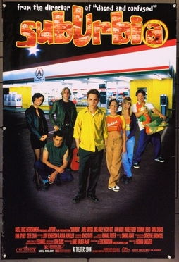

Richard Linklater
1996
121 minutes
This is the other film called SubUrbia. This is the Richard Linklater/Eric Bogosian one, not to be confused with the Penelope Spheeris one from Section 217. You'll get there eventually, if you haven't been already.
This is the film that's not as directly punk-related. This is about a group of slacker friends hanging out wasting their early adulthoods hanging out in the parking lots of convenience stores and liquor stores, regretting never leaving their crappy little town and doing something more interesting. One of their friends who achieved escape velocity with some minor musical success shows up for a visit and ignites even more pathetic jealousy and resentment and envy amongst the friends. Most of the characters are some version of unlikeable and unstable, and it's a weird and uncomfortable film.
You're always mildly horrified watching films where people are in the same towns they've lived in for their entire lives. You spent most of your childhood around the same rather small city where your mother grew up, but your parents were divorced and your dad moved around all over the country for his job when you were a child and you split some time between them. Even before you were born your mother and father lived in a lot of different places all over the state. And most of your male relatives had been in the military at some point and lived elsewhere while they were in the service, even if they ultimately moved back to your town. It always weirded you out meeting people who had never lived anywhere else for a significant period of time. It's shocking how many people this is the case for, whether back home or even in the other places you've lived. Most people you've met in your life either never left their hometown, left briefly to have their Big College Adventure, or they moved to their current city for college and then never left. And they'd never dream of moving because they couldn't bear being away from their homies they've had since gradeschool or their undergrad years or whatever. It dumbfounds them that you and your belated wife had to pick up roots and move to different cities multiple times as adults, going to places where neither of you knew anyone and starting your lives over.
This movie reminds you of what it would be like if Jay and Silent Bob were really really sad. It is pathetic and poignant for the same reasons Clerks is pathetic and utterly hilarious. Growing up with divorced parents wasn't ideal, but at least you got to bounce around and see that other places were, indeed, the same in many ways but also different in ways that sometimes counted. By the time you had reached high school, you at least had some awareness that things were different in other places, and you had experience with some other places you might live someday and some places you never wanted to live if you could help it. Those experiences were a good way to learn that moving away wouldn't solve all your problems, but at least you'd get rid of some of the main ones you wanted to avoid.
Time to choose something different: